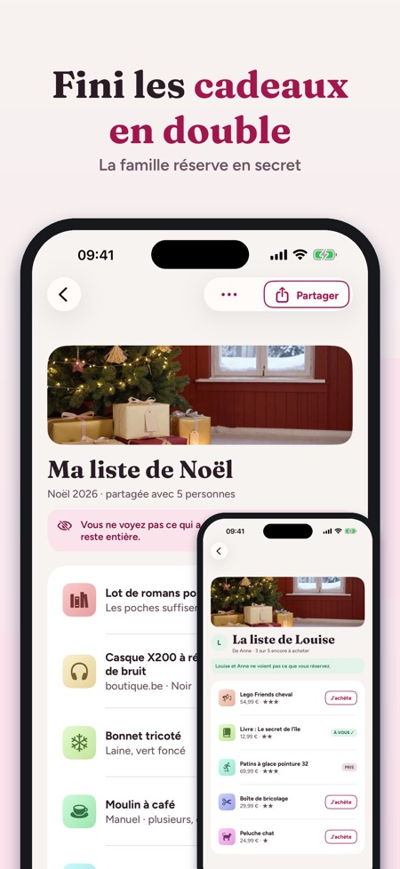
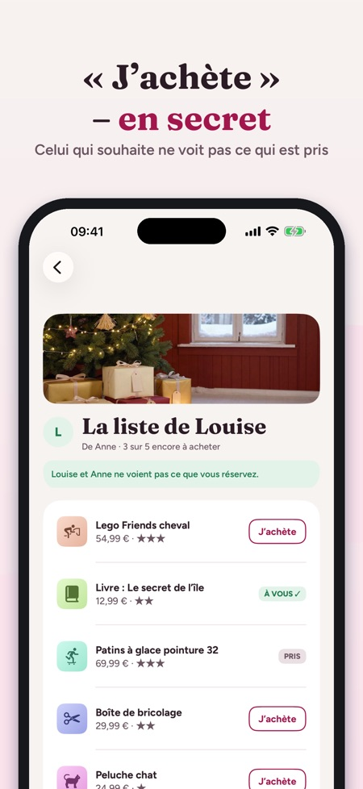
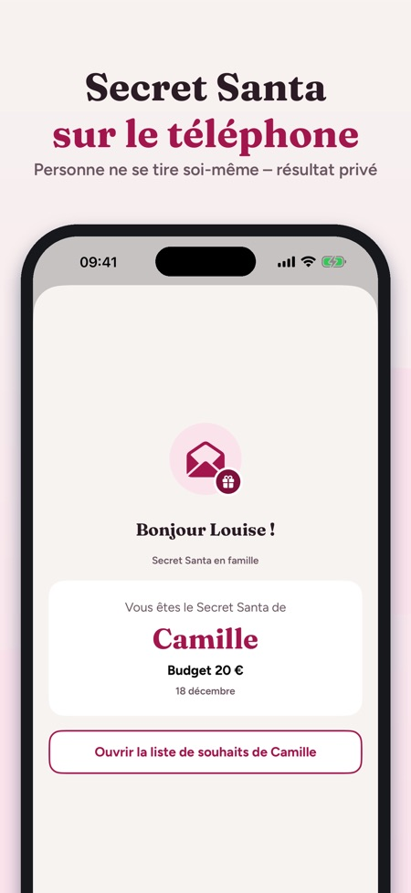

Listes partagées, Secret Santa.



La liste de souhaits que toute la famille voit – fini les cadeaux en double.
Créez une liste par occasion, partagez-la avec un lien et laissez la famille réserver en secret. Mamie voit ce qui reste, votre cousin voit ce qui est pris, et la personne qui a fait les souhaits ne voit jamais ce qui a été acheté.
AJOUTEZ VOS SOUHAITS EN UN INSTANT
• Collez un lien de n’importe quelle boutique – le titre et l’image sont récupérés une fois
• Partagez directement depuis Safari ou l’app d’une boutique : « Ajouter à la liste de souhaits »
• Votre propre photo ou simplement du texte
• Prix, couleur/taille, quantité, degré d’envie (une à trois étoiles), « plusieurs, c’est bien » et une note pour la famille
PARTAGEZ AVEC LA FAMILLE
• Invitez par Messages, WhatsApp ou e-mail – partage iCloud, sans compte
• Ceux qui ont l’app voient la liste en direct et touchent « J’achète »
• Le propriétaire de la liste ne voit pas les réservations : la surprise reste entière
• Si deux personnes réservent la même chose, la première la garde
• Sans l’app : envoyez la liste en image ou en texte
FAMILLE ET À ACHETER
• Toutes les listes partagées avec vous, par personne, avec la prochaine date
• Tout ce que vous achetez au même endroit : réservé, acheté, emballé, offert
• Budget par personne
OCCASIONS ET RAPPELS
• Noël, Saint-Nicolas, anniversaires, fêtes, mariages, diplômes, baptêmes, communions et vos propres dates
• Un rappel 14 jours avant – avec le nombre de souhaits restants
SECRET SANTA
• Ajoutez les participants, les paires qui ne peuvent pas se tirer, le budget et la date
• Le tirage se fait sur le téléphone et personne ne se tire soi-même
• Chacun reçoit son résultat par un lien privé, qui s’ouvre même sans l’app – l’organisateur ne voit pas le tirage dans l’app
• Ou faites passer le téléphone et révélez un résultat à la fois
LISTES DES ENFANTS
• Créez des listes pour vos enfants – juste un prénom, pas de compte pour l’enfant
ACHAT
3 listes personnelles et tout ce qui concerne le fait d’offrir (partager, réserver, À acheter, budget) fonctionnent sans achat, tout comme un tirage du Secret Santa jusqu’à 5 personnes. Un achat unique débloque l’accès complet : listes illimitées, plus de listes pour les enfants, Secret Santa pour les groupes plus grands, idées cadeaux et export PDF. L’achat couvre toute la famille grâce au partage familial. Sans abonnement, sans publicité.
CONFIDENTIALITÉ
Les listes sont enregistrées sur vos appareils et dans votre iCloud. L’app envoie des statistiques d’utilisation anonymes via Google Analytics for Firebase (p. ex. écrans et boutons utilisés, achats intégrés et pays approximatif) ; vous pouvez les désactiver dans Réglages.